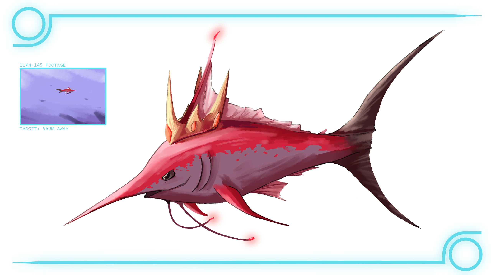

RIFT WATCH DATABASE

A marlin that has bright, red scales, seemingly unbothered by the fact that it does not care about how visible it is within the open waters. Its aggressiveness must not be underestimated, seeing as it can drive away even the most dangerous of manifestations within the rift’s epipelagic zone. We thought that its visibility might affect its survivability, but it seems that it does not care about such things. Even our █████████ was not able to acquire even the tiniest of its flesh due to it being able to swim away confidently.